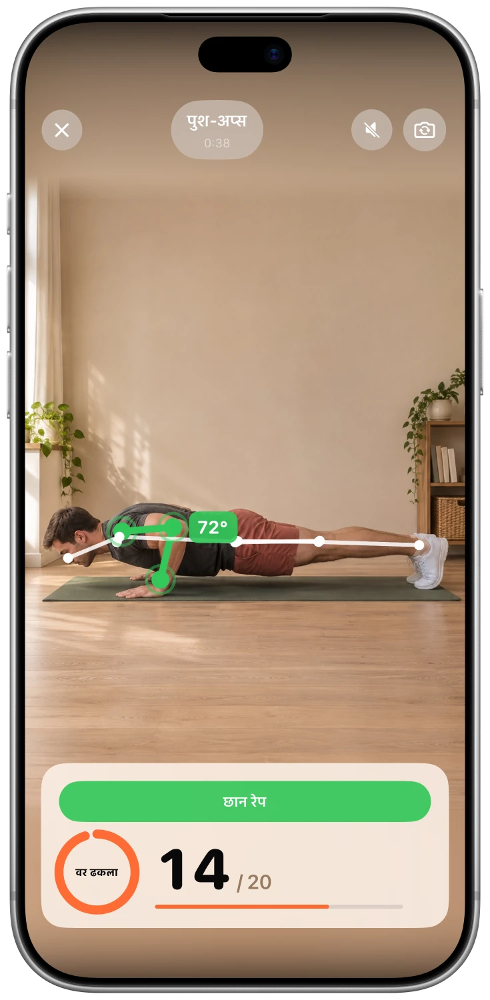
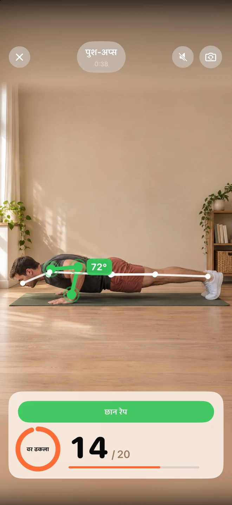
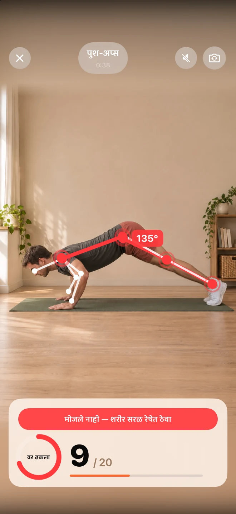
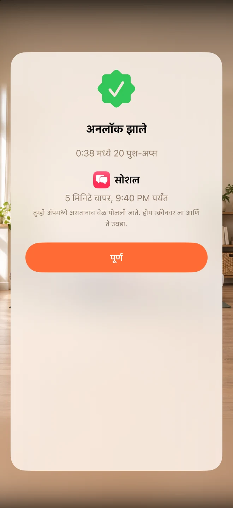

तुमचे व्यत्यय निवडा.
ज्या ॲप्सपासून थोडे दूर राहायचे आहे, ते निवडा. अनलॉकवाई ॲपलच्या स्क्रीन टाइमचा वापर करून ते ॲप्स लॉक ठेवते.
'फीड' पाहण्यापूर्वी थोडी हालचाल करा.
ऑटोमॅटिक मोड कमी करा, स्वतःला अधिक महत्त्व द्या.
ज्या ॲप्समुळे तुमचा वेळ वाया जातो, ते लॉक करा. काही मिनिटे परत मिळवण्यासाठी, पुश-अप्स, स्क्वॅट्स किंवा जंपिंग जॅक्स करा.
विनामूल्य · कोणतेही सब्सक्रिप्शन नाही · खाते आवश्यक नाही.


ॲपचा स्क्रीनशॉट
तुम्हाला हे का आवडेल
ज्या ॲप्सपासून थोडे दूर राहायचे आहे, ते निवडा. अनलॉकवाई ॲपलच्या स्क्रीन टाइमचा वापर करून ते ॲप्स लॉक ठेवते.
पुश-अप्स, स्क्वॅट्स किंवा जंपिंग जॅक्स निवडा. तुमचा आयफोन कॅमेरा तुम्ही केलेल्या हालचालींची संख्या मोजतो आणि तुम्हाला त्वरित प्रतिसाद देतो.
स्वतःचे रिवॉर्ड आणि दैनंदिन मर्यादा सेट करा. तुम्ही ॲप वापरत असताना मिळवलेले मिनिट्स जमा होतात, त्यानंतर लॉक पुन्हा सक्रिय होते.
एकदा डोकावून पाहा
वास्तविक स्क्रीन. आत काय आहे, याचा अनुभव घ्या.



FAQ
सुरुवात करण्यापूर्वीच उत्तरे मिळवा
अनलॉकवाई ॲपलच्या स्क्रीन टाइमचा वापर करते. तुम्ही ॲप्स निवडता आणि सेटअप करताना ॲप्सना एक्सेस देण्याची परवानगी देता. तुम्ही तुमच्या आयफोनच्या सेटिंग्जमध्ये ही परवानगी रद्द करू शकता.
Unlocky तुमचे रेकॉर्डिंग करत नाही. कॅमेऱ्याच्या फ्रेमचे विश्लेषण थेट तुमच्या iPhone वर तत्काळ होते. व्हिडिओ आणि फोटो जतन किंवा अपलोड केले जात नाहीत.
हो. तुम्ही पुश-अप्स, स्क्वॅट्स किंवा जंपिंग जॅक्स निवडा आणि प्रत्येक सेटसाठी किती मिनिटे मिळतील हे ठरवा. दिवसाची कमाल मर्यादा तुम्हाला एक निश्चित सीमा राखण्यास मदत करेल.
हो. अनलॉककीमध्ये कोणतेही सब्सक्रिप्शन किंवा शुल्क नाही. यासाठी iOS 17 किंवा त्यावरील आवृत्ती असलेला iPhone आवश्यक आहे.
विनामूल्य · कोणतेही सब्सक्रिप्शन नाही · खाते आवश्यक नाही.
तुमच्या सोयीनुसार व्यायाम करा आणि काहीही दुखल्यास थांबा. जर तुम्हाला काही आरोग्य समस्या असतील, तर नवीन व्यायाम सुरू करण्यापूर्वी डॉक्टरांचा सल्ला घ्या.